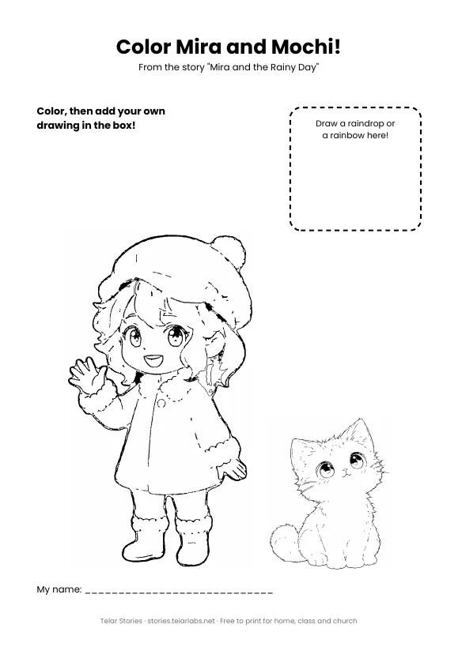
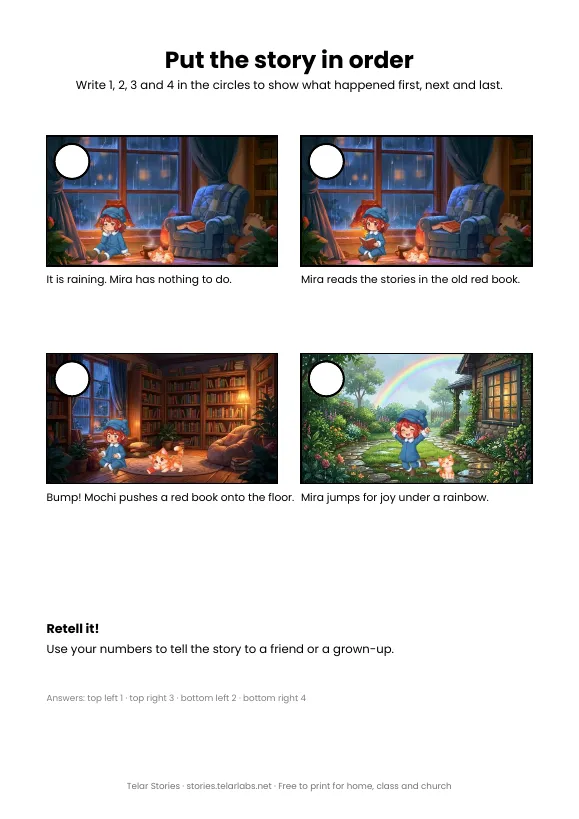
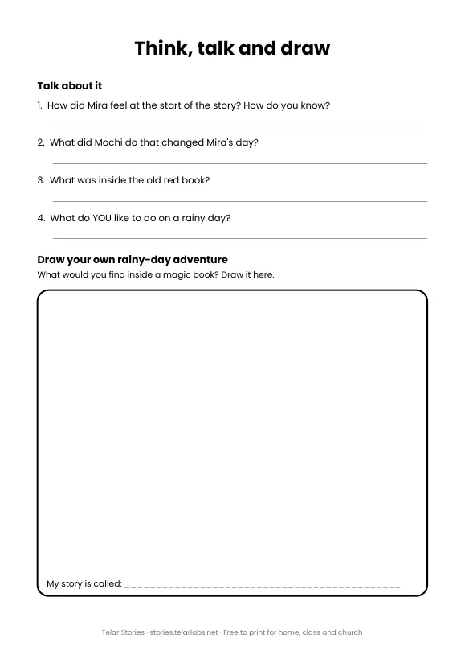

Mira and the Rainy Day
A free narrated picture-book story about a rainy afternoon, a curious cat and an old red book, with a printable coloring page, sequencing sheet and discussion questions.
▶ Open this story in Telar Stories
The story
It’s a rainy afternoon, and Mira wants to play outside. “There is nothing to do,” she sighs, while her little cat, Mochi, sleeps nearby. Then Mochi wakes up, wanders to the bookshelf and – bump! – knocks an old red book onto the floor. Inside, Mira finds stories about faraway places, brave animals and wonderful friends. By the time she looks up, the rain has stopped and a rainbow fills the sky.
What it teaches
Boredom is often the start of something good. The story gently shows children that books and imagination can turn an ordinary day into an adventure, and that small surprises, like a cat knocking over a book, can lead somewhere wonderful.
Play: put the story in order
Now tell the story in your own words, one picture at a time.
Before the story
- Look out the window together. What is the weather like today?
- What do you do when you can’t play outside?
- Show the title scene and ask: what do you think this story is about?
After the story: questions to talk about
- How did Mira feel at the start of the story? How do you know?
- What did Mochi do that changed Mira’s day?
- What was inside the old red book?
- How did Mira feel at the end? Why?
- What do YOU like to do on a rainy day?
- If you found a magic book, what kind of stories would be inside?
Free printable activity pack
Three pages to print at home, in class or at church. Black-and-white friendly, A4 and US Letter.

A coloring page with Mira, Mochi and a box to draw a raindrop or rainbow.

Four pictures from the story to number 1 to 4, then retell. Answers at the bottom.

Four questions to talk about and a big box to draw a rainy-day adventure.
⬇ Download the printables
Activities to try
- Rainy-day book nook: make a cozy reading corner with pillows and a blanket, and read a favorite book together, the way Mira did.
- Rain sounds: tap fingers on a table to make soft rain, then louder rain, then let it stop and draw a rainbow in the air.
- Book hunt: let your child pick an “old” book from the shelf, like Mochi did, and read it together.
- Make it yours: in Telar Stories, change Mira’s name to your child’s name and record the last line together, then save the video.
Make it your own
Open the story in Telar Stories and change anything: your child’s name, the words, the music or the voice. You can record your own voice for each scene and save the finished story as an MP4 video to share with family. See Make your first story video.
Free to use: print as many copies as you need for your family, class or church. Please don’t sell them.